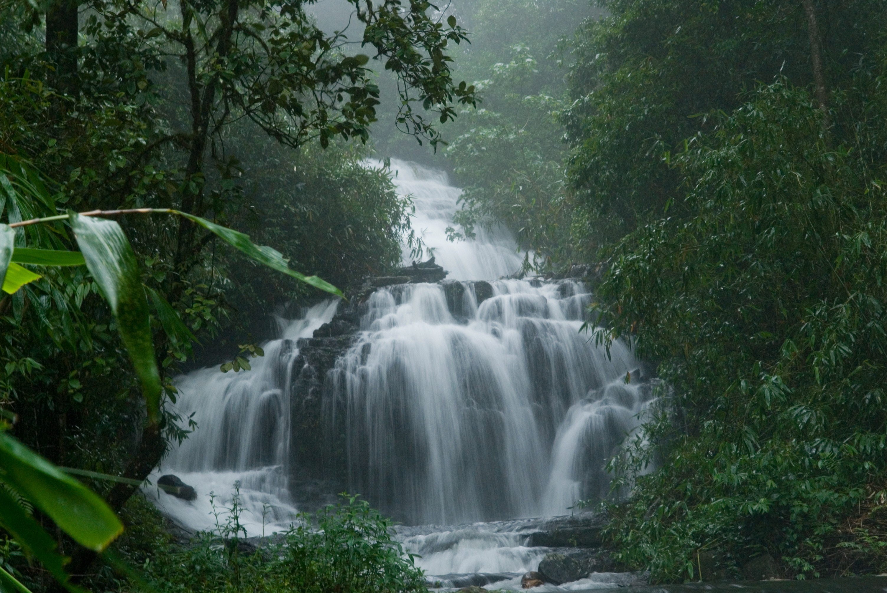

Sree Padmanabhaswamy Temple is a Hindu temple located in Thiruvananthapuram, the capital of Kerala state in India. The temple is dedicated to Lord Vishnu and is a blend of Kerala and Dravidian styles of architecture1. The temple is believed to be the world’s richest temple
Learn moreThiruvananthapuram Zoo (also known as Trivandrum Zoo) is located in the city of Thiruvananthapuram, the capital of Kerala state in India1. It occupies 55 acres of woodland, lakes, and lawns2. The zoo is one of the oldest zoos in India and has a history that dates back to early 19th century
Learn moreVarkala Cliff is a geologically important site in Varkala town, Kerala1. The cliff is formed by laterite and overlooks the Varkala beach1. It has been declared as a Geological monument by the Geological Survey of India1. The cliff stretches about 2 to 3 kms and has beautiful sunset view
Learn moreJatayu Earths Center Incorporates all aspects of tourism, offering a complete Gods own Country experience to each one of you. Spread across 65 acres of land, Jatayu Earth's Center has elegant and mesmerizing elements that lures you for a visit!
Learn moreSasthamkotta Lake is the largest of its kind in Kerala and said to have derived its name from an ancient Sastha Temple located near the lake. It is surrounded by hills on the 3 sides and is the largest source of drinking water for the residents of Kollam.
Learn morePalaruvi Waterfalls, which literally translates to Stream of Milk. The white-stream waterfall descending from the height of 300ft resembles the shape of a horses tail. An ideal time to visit this place is from June to January. It is the 32nd highest waterfall in India, also known to have Ayurvedic properties.
Learn moreKuttanad (Malayalam: കുട്ടനാട്) is a region covering the Alappuzha, Kottayam and Pathanamthitta Districts, in the state of Kerala, India, well known for its vast paddy fields and geographical peculiarities. The region has the lowest altitude in India, and is one of the few places in the world where farming is carried on around 1.2 to 3.0 metres (4 to 10 ft) below sea level
Learn moreWhy is Krishnapuram Palace famous? It is a historically important palace, located close to the Sree Krishnaswamy Temple at Krishnapuram. History reckons this double-storeyed palace as the one where the kings of Kayamkulam dynasty last stayed. It is a typical example of a palace design that is akin to that of local rulers in ancient Kerala.
Learn moreAlappuzha beach is quite a popular tourist spot in Kerala, known to provide relaxation. The pier, which extends into the sea here, is around 140 years old. Blessed with natures green beauties such as lagoons, vast lakes and numerous fresh water rivers, Alappuzha is a natural wonderland of Kerala state. The Alappuzha (Alleppey) beach is spectacular.Known as the Venice of East, with the Arabian Sea in the West
Learn more